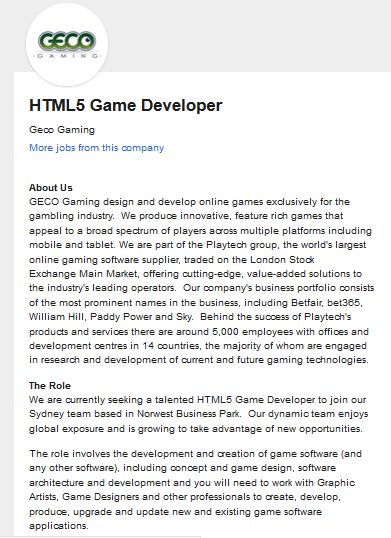
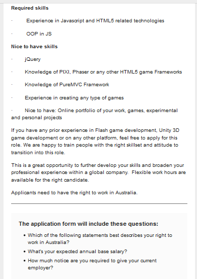

Personal information
Name: Micheal Watson
Student number: s3792872
Email: s3792872@student.rmit.edu.au
Hi all my name is Micheal and I’m studying Bachelor of Information Technology, I’m currently in my first year. I’m 25 years of age and was born in Melbourne Australia; I have grown up here all my life and I’m of mixed European background (Italian, French, Croatian, Dutch and Irish), but only speak English. After high school I went to Tafe and completed a diploma of IT and then moved on to a Bachelor of Digital Media, after a while I decided that I didn’t want to pursue this career and decided to just find a job somewhere, so for the last 3-4 years I have just being working. I enjoy spending time with my mates, weather it be going out to eat, going to music festivals or just staying home and playing games. I also enjoy watching a select sports on TV mainly Cricket and AFL, but most of my spare time I’m either playing games or watching YouTube or Twitch.tv.
Interests in IT
Like most people my age we grew up in the ages of IT, we grew up in a time where video games, the internet, smart phones, touch pads, consoles, etc. all became mainstream. What interests me the most in the IT world is the programming side, this includes game-development, software-development, web-development; I enjoy the challenge of trying to solve problems in programming, weather it be trying to get your program to do a certain thing, trying to fix errors in your code and learning new methods to make things work more efficiently. I’m also interested in the Networking side of IT, while studying my Diploma of IT we also completed a CISCO certificate; just like Programming I liked the challenge of trying to get a network to run properly and trying to problem solve issues that popped up. I decided to study at RMIT because I had heard good things about it and it being in the city makes it very easy to travel to and from home. While studying here I expect to learn a wide range of skills and assets that will help me progress my career in the IT world, while also networking to try and obtain a job after I complete my studies.
Ideal Job
The job is for a HTML5 Game Developer from Geco Gaming, who produce games for the online gambling industry. The job is looking for a HTML5 game developer whose role is to develop and create new software as well and update current software, the role also requires you to work with Game artists and Game designers to complete a final product. Skill and experience include: Javascript and HTML5 experience, OOP in JS, JQuery, Knowledge of HTML5 game frameworks (Phaser, PIXI), PureMVC experience, Prior experience in creating gamesand an Online portfolio of my work I currently have some experience in making games in a HTML5 game framework (Phaser), I also have some javascript and HTML5 experience. The way I would go about acquiring more experience and skills needed for this job would just be through private study; example just trying to make my own crappy games just to get experience and confidence in using the frameworks and coding language
https://www.seek.com.au/job/38566575?searchrequesttoken=6126fb8f-80d8-4030-9924-718e10fd7d42&type=promoted
 Personal profile


After reading and analysing the results of all 3 tests, I can agree on the majority of the results and can say that they’re fairly accurate and it means that I know myself pretty well which is good because I know the strengths and weaknesses of myself. I believe these results would influence a group positively as I’m pretty open to others people opinions. When forming a group I should try to find people who are also open to different suggestion from other people, that way we can bounce ideas of each other without anyone getting annoyed within the group.
Project idea
Overview My idea for this assignments project is a mobile game, my idea for the game would be something that would challenge the user to problem solve certain projects within the game. The game would be a game you could play on the train on your way to work, it could help people mentally wake up in the morning and get ready for their day (sort of like a workout for your brain) and could help people rely less on drinks such as coffee and energy drink to wake them up in the morning.
Motivation The motivation behind this project is from my experiences catching public transport in the morning, more specifically the train. Most of my experiences on the train so far this year has just being me sitting and down listening to music and then almost falling back asleep again. So my solution to this is to create a game that will stimulate the brain in the morning without having to drink coffee or energy drink (I don’t drink coffee or energy drinks). I also see other passengers sometimes falling asleep or just staring out the window bored.
Description Going into more detail; this project idea is a mobile game that will challenge the user into completing a certain set task within the game using different abilities and tools to help the user succeed. The games genre could be categorized into a platformer/puzzle game, the game will have a basic menu screen where you can choose to play the game, change some basic settings (eg volume) and a small tutorial which will quickly explain the basic concepts of the game ( the player will have to figure out the more advance concepts of the game by themselves and the game encourages experimentation and self learning), there will also be a level select so returning players can pick up where they left off. Once the user has selected ‘play’ they will be put into the first level of the game which will serve as a warmup level; once completed the game will progressively get harder and harder, thus require more thinking and time to complete each level. Also, with each passing level more mechanics will be introduced into the game that will make the level more difficult; these mechanics may include obstacles in the way that require new tools that weren’t required before, mechanics that reduced the effectiveness of certain abilities and tools (the player will be notified of such things when the level begins. Scoring system will be based off how fast you complete the level and will be stored within your phone so you can compare with other players, other stats such as abilities and items used will also be used to tracked to see how efficient the player is at completing a level, all of this is put in place to encourage players to come back and try beat their old score, or just attempt new ways to complete the level. The game will also support users making their own level where they can upload to a forum or sites such as GitHub, where other players can download the game and play for themselves, which would help a community grow from the game as other users could challenge other players to play their level and get players to make harder/interesting levels. An example of a level would be would be where the weather changed in the game and it would effect certain mechanics within the game e.g tools freeze up and they cant be used or they are not as useful. Another example of how the weather changed the game is it deteriorates the environment of the level e.g floors cave in, walls collapse; so the player has to complete the level in a faster amount of time; there would also be time based events, where certain things that are designed to kill the player (rocks falling down everywhere and floors collapsing) and the player will have to be prepared next try to try and counteract these events.
Tools and technologies The game will be made through phaser, which is an opensource framework for desktop and mobile html5, the games and developed through javascript or typescript. I will also need to test my game many times through a browser and mobile to make sure there is no crashing/errors. I will also need to use programs such as adobe photoshop/illustrator for the arts side of the game (creating backgrounds and sprites respectively).
Skills required The project will require me to understand how to use phaser and how to code the game through javascript, luckily, I have some experience doing this already so all I would need to do is to learn how to pick it up again. There are also many tutorials on the phaser website which I can use to help with the making of this game, the website also has a forums that I can utilize and ask help from other users if I get stuck. Additionally I could use YouTube to find video tutorials to further help me understand what I am doing. I will need to have an understanding of the adobe programs Illustrator and photoshop, which I already have a basic understanding of.
Outcome To consider this project an success firstly I just want the game to run properly with no errors and everything working as intended; secondly I can get feedback from users to see firstly if they enjoyed the game and if they felt it gave them something to do while on the train or bored ( the difficulty and specifics don’t matter at this point I just want to know if it was enjoyable, the small details can be fixed later on).